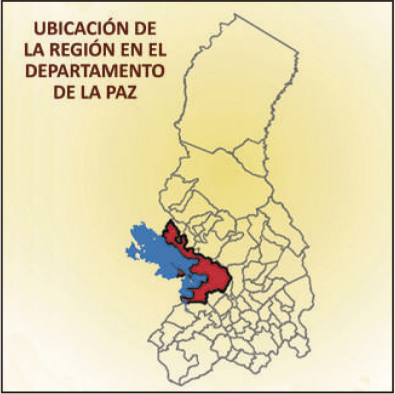
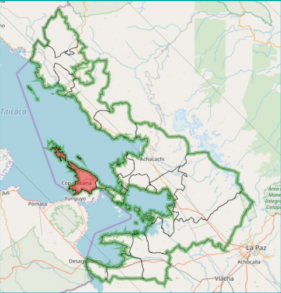
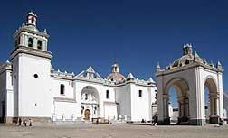
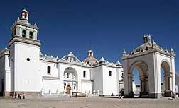
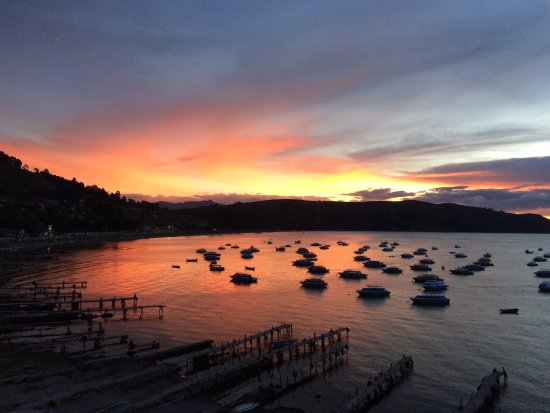
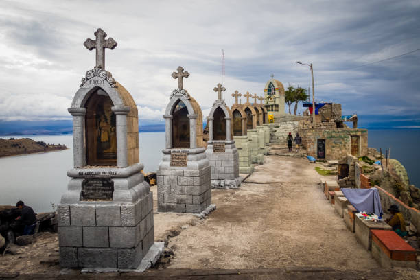
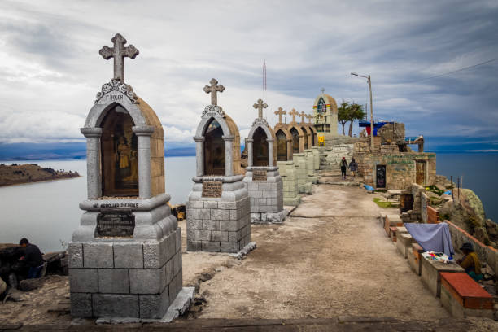

CIUDAD TURISTICA
Copacabana es una pequeña ciudad turística y un municipio de Bolivia y una de las principales localidades ribereñas del lago Titicaca. Es la capital de la provincia de Manco Kapac, ubicada en el departamento de La Paz.
La ciudad, construida entre los cerros Calvario y Niño Calvario (o Kesanani), tiene cerca de 6 mil habitantes. Se constituye la capital del municipio homónimo, el cual abarca 33 comunidades campesinas originarias. El municipio de Copacabana cuenta con una población de 14.931 habitantes (según el Censo INE 2012), sin embargo la población urbana de Copacabana solo es de 3000 habitantes aproximadamente, lo que significa una población rural de 12 000 habitantes.
UBICACION
Está ubicada a 155 km de la ciudad de La Paz. Es un centro de peregrinación por hallarse en la misma la imagen de la Virgen de Copacabana, la advocación mariana más extendida en Bolivia.
 ATRIBUTOS TURISTICOS
Basilica de Nuestra Señora de Copacabana
La Basílica de Nuestra Señora de Copacabana posee una imponente belleza y una gran colección de objetos religiosos. El templo fue construido en estilo renacentista entre los años 1601 y 1619, por el arquitecto Francisco Jiménez de Siguenza, y concluido junto con el atrio y posas que lo rodean el año 1640. A decir de los historiadores, D. José de Mesa y Teresa Gisbert, lo más extraordinario del conjunto de Copacabana es que conserva la Capilla Abierta o Capilla de Indios, que se puede ver adosada a la nave del templo.
 

Playa de Copacabana
A 3841 msnm se extiende una playa sobre la Bahía de Copacabana siendo considerada por ende como una de las más altas del mundo y un importante sitio turístico de la población. Sus características aguas gélidas son un sitio predilecto para la práctica de deportes acuáticos y punto de partida hacia la Isla del Sol. Las temperaturas oscilan entre 20 °C (temperatura máxima anual promedio) y 1 °C (temperatura mínima anual promedio). La mejor época del año para visitarlo es de mayo a octubre, cuando el clima permanece fresco. Mientras que puede ver temperaturas más altas en verano (de noviembre a abril), el área recibe un mayor cantidad de lluvias, lo que hace las actividades de balneario menos atractivas. Durante junio a agosto, las temperaturas nocturnas pueden llegar a punto de congelación, pero durante el día la intensidad de los rayos solares puede causar quemaduras.
El Calvario
El cerro el Calvario está ubicado al noroeste de Copacabana y tiene 120 metros de altura aproximadamente, es muy escarpado y de naturaleza rocosa. En el sendero de acceso se ubican las estaciones del Vía Crucis que rememoran los pasos de Jesús hacia su crucifixión y muerte en el Gólgota. Durante la época precolombina era considerado como lugar sagrado o “huaca”. Posteriormente la Iglesia Católica con el propósito de desplazar las prácticas de la religiosidad andina, en 1946, Fray Leonardo Claure mandó a construir las 14 cruces y los misterios de la Virgen María. En cada estación hay un pedestal sobre el que se encuentra una cruz blanca a la cual los devotos lanzan las piedras que cargan durante el recorrido desde la base del cerro. Este ritual representa la liberación de los pecados cometidos por los feligreses. Además de su significado católico, tiene un componente cultural importante pues a medio trayecto y al concluir las estaciones en el área que se denomina Misterios del Santo Rosario, se ubican los yatiris (sacerdotes andinos) que leen en hojas de coca el futuro de los fieles y se disponen para la venta de casas y dinero en miniatura, los cuales son bendecidos mediante “ch’allas” (ofrendas) o sahumerios que se realizan con el fin de que se cumplan las peticiones realizadas en el ascenso.
El Cerro Calvario de Copacabana recibe una gran afluencia de visitantes en Semana Santa y fiestas patronales, pero es una atracción turística durante todo el año por ser un excelente mirador natural desde donde se divisa el esplendor del Lago Titicaca y la Población de Copacabana. La visita al atractivo puede prolongarse durante el día y hasta la puesta del sol, pero se debe tomar las precauciones de abrigo en tiempo de invierno (mayo-junio). Las actividades que se pueden realizar son caminatas y la caza fotográfica.
 

TRANSPORTE
El tiempo aproximado de viaje es de 4hrs. en bus, por otro lado el tiempo de viaje en minibuses es de 2:30hrs.
Ida
Debe aproximarse a la terminal interprovincial del alto o al cementerio general para poder tomar vehiculos, tanto buses como minibuses. El tiempo aproximado de viaje es de 4hrs. en bus, por otro lado el tiempo de viaje en minibuses es de 2:30hrs. La salida de buses es de entre las 6am hasta las 6pm. La salida de minibuses es de entre las 4:30am. hasta las 6:30pm
Vuelta
Para salidas en horarios mañaneros (3:30am - 6:00am) en este horario existen unicamente minibuses y debe aproximarse a la plaza de armas. Para salidas de 6:30am a 7:00pm debe aproximarse a la plaza Sucre, en este horario existen tanto buses como minibuses